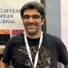
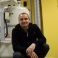
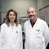
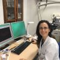
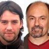

Programme
ICMAB-CSIC, Monday 1 of April of 2019
|  | Welcome | ||
|  | NMR at the UAB: Equipment, Methodology and Applications | ||
Magnetic Resonance Imaging (MRI) in materials science. | |||
COFFEE BREAK | |||
|  | Electron Paramagnetic Resonance: Organic radicals applications in materials science | ||
|  | Pulsed Electron Paramagnetic Resonance: Applications in biology and materials science | ||
Application of EPR to the study of reactions of environmental interest: Elimination of nitrogen oxides | |||
 | LUNCH BREAK | ||
|  | Raman spectroscopy: Fundamentals & applications | ||
Surface Enhanced Raman Scattering: from molecular spectroscopy to biophysical applications | |||
Synchrotron based Infrared Microscopy for biological studies | |||
CLOSING |